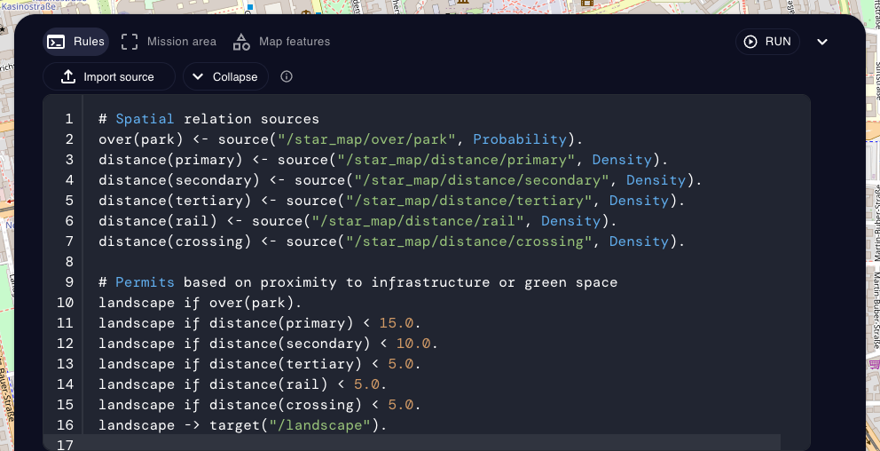
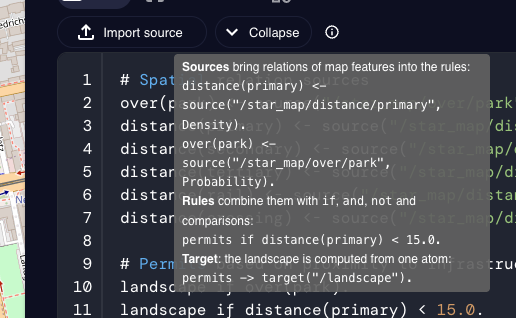
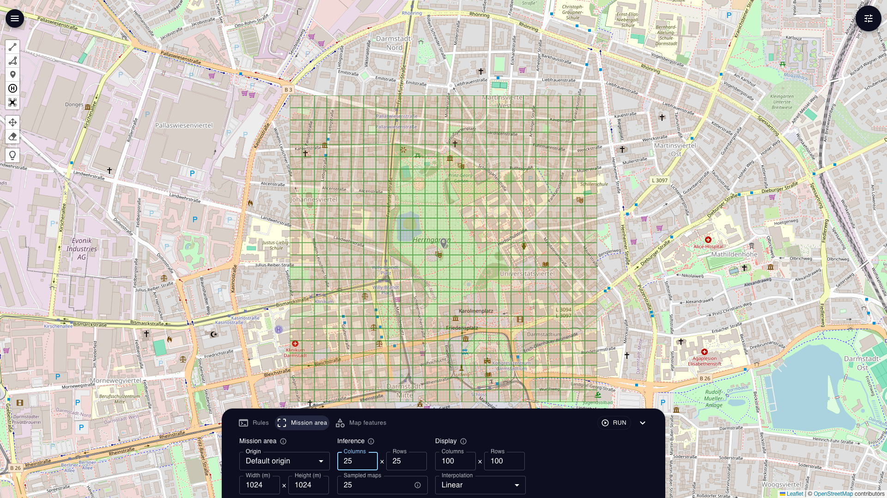
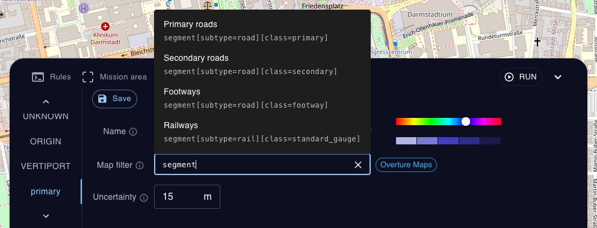
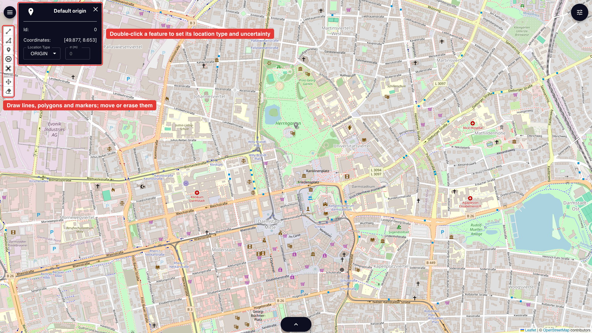
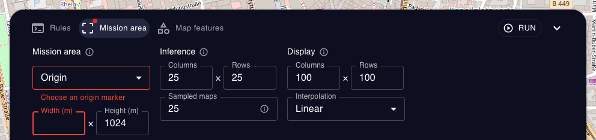

GUI Guide
This guide walks through the parts of the GUI in the order of a mission design: the rules, the mission area, the map features the rules refer to, and running the computation. See Graphical User Interface for how to start the GUI and a first example run.
Rules
The Rules tab of the mission panel holds the mission rules, written in Resin.
You can type them in the editor, or load a .pl file with Import source.
Collapse shrinks the editor to see more of the map.

A program has three parts:
Sources bring the spatial relations of map features into the rules.
distance(primary)is the distance to the nearest primary road, andover(park)whether a location lies within a park. Both are estimated by ProMis as StaR Maps, under the uncertainty of the map data. Each relation used by the rules is declared as a source, with a channel/star_map/<relation>/<location type>:distance(primary) <- source("/star_map/distance/primary", Density). over(park) <- source("/star_map/over/park", Probability).
The supported relations are
distance,overanddepth.distanceanddepthare declared asDensity,overasProbability.Rules combine relations with
if,and,notand comparisons:landscape if over(park). landscape if distance(primary) < 15.0 and not over(water).
Several rules for the same atom are alternatives, i.e., any one of them suffices.
Target: one atom is sent to the landscape channel, and its probability at each location becomes the mission landscape:
landscape -> target("/landscape").
The atom can have any name, e.g.,
permits -> target("/landscape").
Hovering the info icon next to Collapse shows a short version of this syntax:

Mission area
The Mission area tab sets where the landscape is computed, and how finely. While one of its fields is selected, the map outlines the mission area with the inference grid (green) and the finer display grid.

Mission area: the rectangle in which map features are loaded and the landscape is computed. It is centered on an Origin, a marker of the location type
ORIGIN, and spans Width and Height in meters. The GUI starts with the markerDefault origin. To use another one, place a marker on the map and give it the typeORIGIN, see Drawing objects.Inference: the grid of Columns and Rows on which the spatial relations and the landscape are computed. Sampled maps is the number of randomly varied versions of the map that the relations are estimated from. Finer grids and more samples are more accurate but slower.
Display: the finer grid that the landscape is interpolated onto for display, and the Interpolation method:
Linearblends between neighboring cells,Nearestcopies the closest cell and is fastest, andGaussian processgives a smooth fit but is slowest.
More on how the relations are estimated can be found in the paper StaR Maps: Unveiling Uncertainty in Geospatial Relations.
Map features
The Map features tab lists the location types, one per tab.
A location type is the name that the rules use for a kind of map feature, e.g., primary in distance(primary).
Each one has
a Name, as used in the rules,
a Map filter, which selects the features loaded from map data, see Map filters,
an Uncertainty, the standard deviation in meters by which the loaded features are randomly shifted when the relations are estimated,
a Color, used for its objects on the map.
New type adds a location type, Edit changes the selected one, and Delete removes it.
Pick on map assigns objects that you have drawn to the selected type: click it, then click the objects on the map, and click Done picking when finished.
The built-in types UNKNOWN, ORIGIN and VERTIPORT have no filter and only contain objects drawn or picked on the map.

Map filters
By default, features are loaded from Overture Maps. A filter names an Overture type, followed by optional conditions on its properties in brackets:
Filter |
Loads |
|---|---|
|
all buildings |
|
primary roads |
|
railways |
|
crosswalks |
|
parks |
|
all water bodies |
|
restaurants |
|
art museums, using a dotted key for a nested property |
The types are building, segment, land_use, land_cover, water, place and the others of the Overture schema, which also lists the properties and values of each type.
Conditions are written as [key] (the property exists), [key=value], [key!=value] or [key~regex], and all conditions of a filter must hold.
Filters that start with a bracket are loaded from OpenStreetMap instead, using its tag filters, e.g., [highway=primary] or [leisure=park]
(see the Overpass query language).
While editing, the filter field suggests examples, and a chip next to it shows where the features will come from. Invalid filters are explained below the field and cannot be saved.
Only the location types that the rules use are loaded, and only within the mission area.
Drawing objects
Besides loading map data, you can draw objects yourself, e.g., an operator position, a landing site or an area to avoid.
The toolbar on the left draws lines, polygons, markers, landing sites and drones, moves objects, and erases them.
Double-click an object to open its info box, where you can set its Location Type and the uncertainty of its position σ (m).
Newly drawn objects have the type UNKNOWN until you give them a type, either in the info box or with Pick on map.

Objects of a location type are combined with the features loaded by its filter, so drawn objects can add to map data or replace it.
Sending objects from Python
Objects can also be sent to a running GUI, either from ProMis or over HTTP.
In ProMis, locations, lines, polygons and whole maps have a send_to_gui method:
1from promis.geo import PolarLocation
2from promis.loaders import OvertureLoader
3
4# send a marker to the GUI
5location = PolarLocation(latitude=49.87, longitude=8.65, location_type="operator", identifier=0)
6location.send_to_gui()
7
8# send all features of a map to the GUI
9feature_description = {
10 "park": "land_use[subtype=park]",
11 "primary": "segment[subtype=road][class=primary]",
12}
13origin = PolarLocation(latitude=49.87, longitude=8.65)
14width, height = 1000.0, 1000.0
15uam = OvertureLoader(origin, (width, height), feature_description).to_polar_map()
16uam.send_to_gui()
Over HTTP, the endpoint POST /add_geojson adds or updates an object from a GeoJSON feature with a point, line string or polygon geometry.
Its location_type property sets the location type, and its id identifies the object for later updates:
{
"type": "Feature",
"geometry": {
"type": "Point",
"coordinates": [8.65, 49.87]
},
"properties": {
"location_type": "operator"
},
"id": "0"
}
1curl -X POST http://localhost:8000/add_geojson \
2 -H "Content-Type: application/json" \
3 -d @entity.geojson
Running
Run first checks that everything needed is filled in. Empty or invalid fields are outlined in red, and their tabs are marked with a red dot, here a missing origin and an empty width:

Otherwise, the run proceeds in three steps, which the button shows while they run:
Loading Map Data: the features of the location types used by the rules are loaded within the mission area.
Calculating StarMap: the spatial relations used by the rules are estimated on the inference grid, from the loaded features and the drawn objects.
Inference: the rules are evaluated in each cell, and the landscape is interpolated onto the display grid.
The result is added as a layer and shown on the map. Each step is cached, and is only repeated when something it depends on has changed. For example, changing a threshold in the rules only repeats the inference, while adding a relation also computes its StaR Map.
Layers
Computed landscapes are listed as layers in the sidebar that opens with the button in the top right corner. Each layer has buttons to
move it up or down, changing which layer is drawn on top,
center the map on it,
rename it,
change its color and opacity; the saturation of each cell follows its value,
open its settings: the render mode (
Heatmap (Squares),Heatmap (Circles),Voronoi,SVG ImageorPNG Image), the radius of the points, the range of values that is shown, exporting it as GeoJSON, and deleting it.
The eye icon next to Collections shows or hides all layers.
Add layer imports a CSV file as a new layer, e.g., data exported from ProMis or from other applications. The file needs a column each for the latitude, longitude and value of the points:
latitude,longitude,value
49.8821815378995,8.647164642182332,7.211102772335674
49.87696708632973,8.658434392066596,0.528400372434818
49.87759650141061,8.65231293292399,57.450293181169556
Projects
The project menu in the top left corner saves and restores your work: Export project saves all layers as a JSON file, which Import project loads again later. Export GeoJSON saves all layers and drawn objects as one GeoJSON file, and Clear all layers removes all layers.